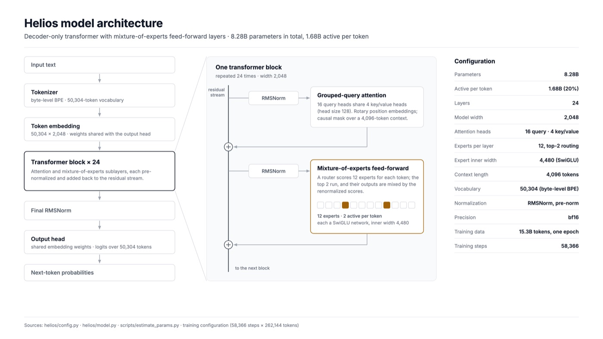
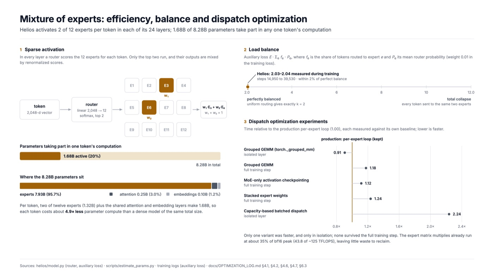
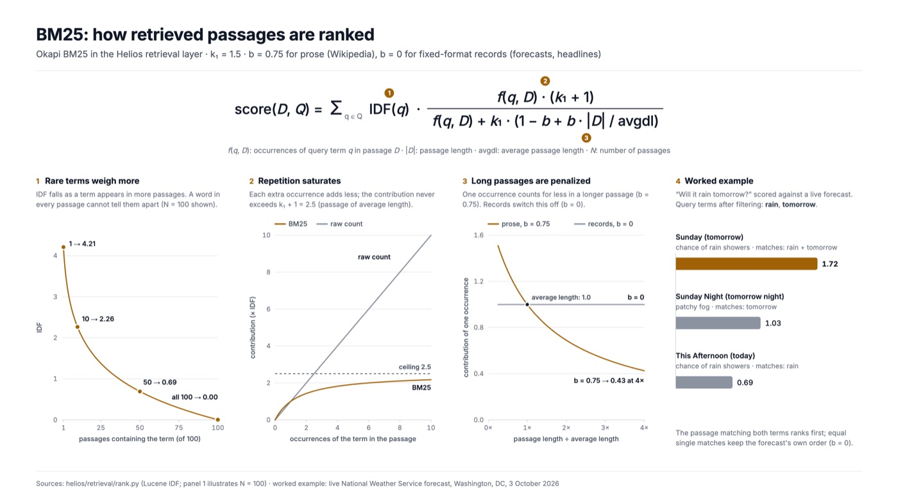
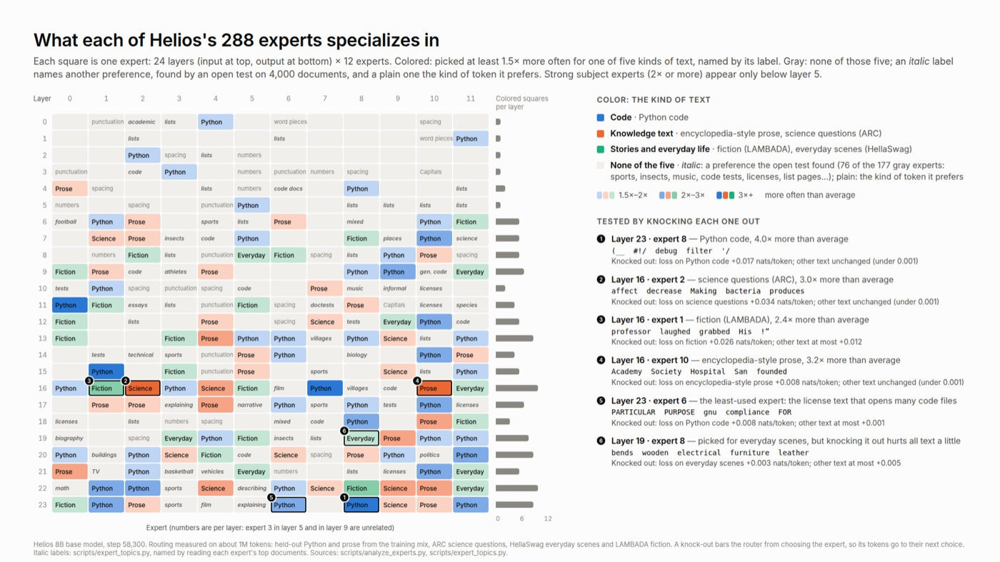
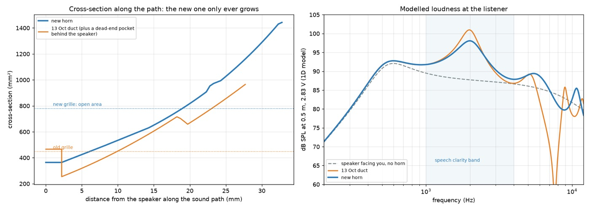
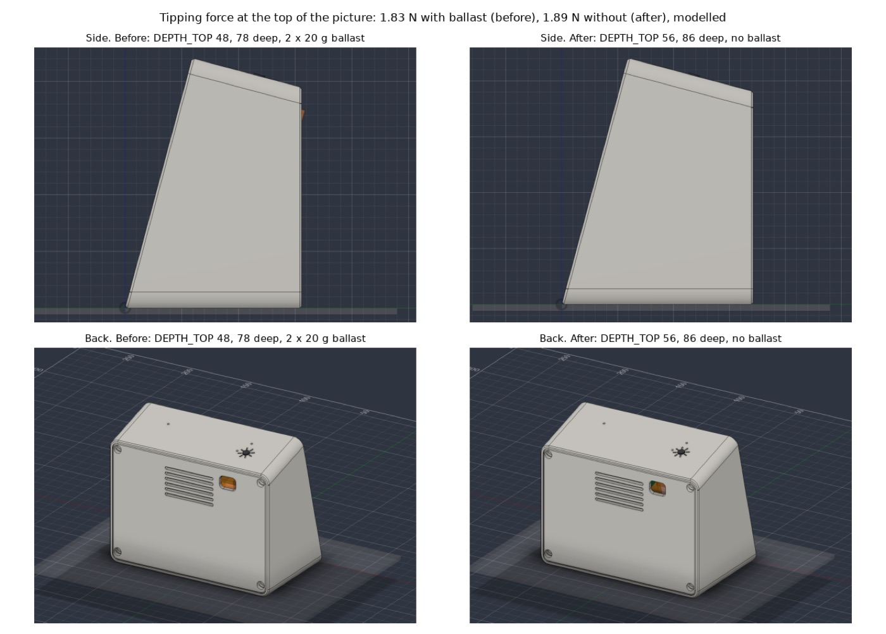
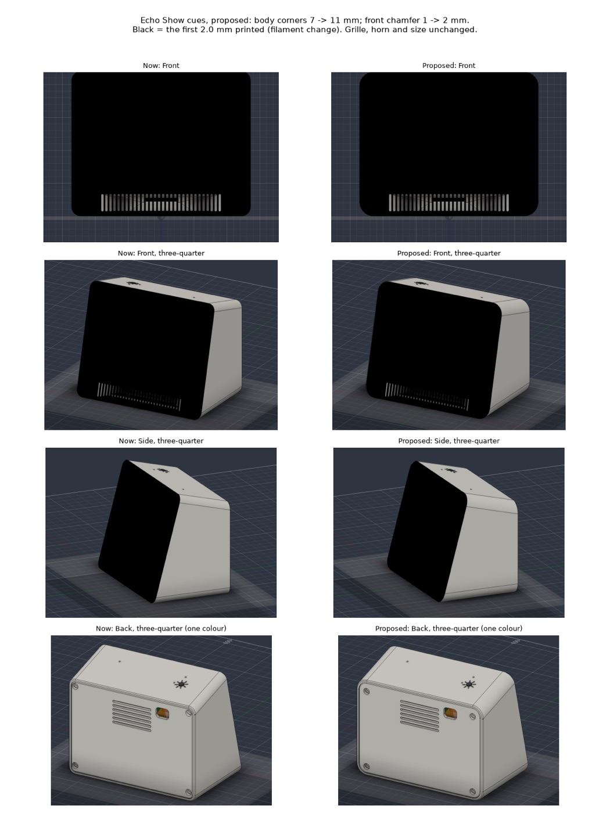
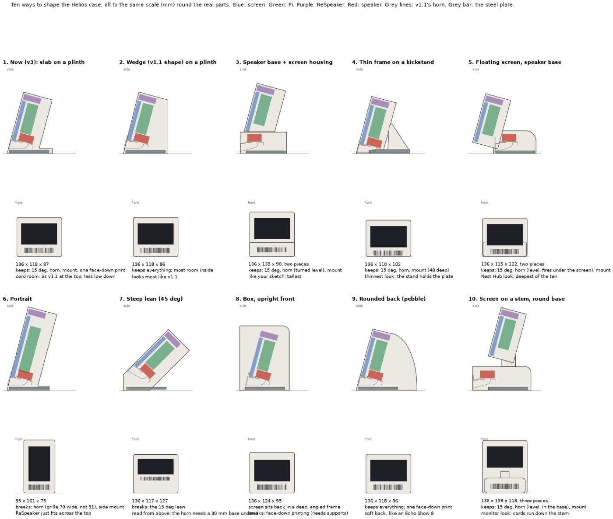

The questions behind every decision.
Before building each part I researched how others do it, then measured my own version. Six areas: the model's design, making training faster, grounding answers in live facts, testing what it learned, the physics of the case, and planning for failure.
Borrowing ideas, not weights
I studied how today's open models are built (nanoGPT, Llama and Mixtral) and the research parts they share, then wrote every piece myself.
- Mixture-of-experts (Mixtral): 12 experts per layer, 2 used per word, so 8.28 B parameters cost about what 1.68 B would to train.
- RoPE: tells the model word order by rotating vectors; it stretches to longer text gracefully.
- Grouped-query attention: 16 query heads share 4 key/value heads, which shrinks memory with little quality loss.
- RMSNorm and SwiGLU: a lighter normalization and a better activation, both standard in Llama.
- Scaling rules: training costs about 6 × parameters × tokens, and a fully trained model sees about 20 tokens per parameter. That math is why I chose 8 B over 12 B.

1.68× faster, measured, before the long run
A run measured in months makes every percent count. Before launching, I tried 13 speed techniques on the real model and the real data, measured each one, and kept 5.
Training went from 9.57 to 5.70 seconds per step: 1,712 to 2,874 tokens a second. Over 66 days, that difference is the reason the run finished in time at all.

Look it up, don't make it up
A model this size can't hold reliable facts in memory, and asking it to guess produces confident wrong answers. So Helios looks things up first: live weather, Wikipedia and news, ranked with BM25, the classic search-engine scoring that weighs rare words more and treats long and short pages fairly.
- Six modules and a 60-test suite; all 15 acceptance checks pass, including live tests against the National Weather Service, Wikipedia and NPR
- Building against the real web found a contradiction in my own spec: strictly following robots.txt would have refused two of the three sources
- It also caught a confident wrong answer in offline mode, now pinned by a test
- Lookups take 0.15 to 0.6 seconds live and about 1 ms from cache, well inside the 3 to 5 second budget for a full answer
The result changes what can go wrong: instead of the model inventing facts, mistakes come from search, which is repeatable and fixable before the presentation.

How Helios compares to models of its size
After pre-training (Oct 24), I scored Helios against GPT-2 XL (OpenAI, 1.5 B) and Pythia-1.4B (EleutherAI), using the same questions and scoring for all three. Scores are out of 100; higher is better.
| Test | What it checks | Helios | GPT-2 XL | Pythia-1.4B |
|---|---|---|---|---|
| ARC-Easy | Grade-school science | 64.9 | 51.7 | 54.7 |
| ARC-Challenge | Harder science | 37.0 | 28.4 | 28.8 |
| My fact questions (30) | Fill in a fact | 80.0 | 73.3 | 66.7 |
| My multiple choice (38) | Knowledge, language, math, code | 92.1 | 84.2 | 86.8 |
| HellaSwag | Everyday situations | 45.9 | 50.9 | 52.1 |
| LAMBADA | Finishing a story's last word | 35.8 | 50.8 | 60.8 |
Helios wins on science and facts, and trails on stories and everyday scenes. That matches what it read: mostly educational web pages (FineWeb-Edu) and no books.
To make sure the science scores weren't memorized, I searched the training data for copies of the test questions. I also mapped what each of the 288 experts (24 layers × 12) specializes in, like Python code, science, fiction, and names of places, and tested them by switching single experts off.
After fine-tuning in November, the scores stayed within about a point, and patch 1 raised all three standard ones slightly (ARC-Easy 65.6, ARC-Challenge 39.3, HellaSwag 46.5).

Acoustics, tipping, and ten looks
The case went through several versions (v1 printed Oct 26, then v3, v4 and later). Each change came from a model or a test, not a guess.
A horn, not a box
An acoustic model of the first speaker duct showed a dead-end pocket causing a 13.5 dB dip near 7 kHz, right where speech gets its clarity. I researched horn loudspeakers (flare shape, mouth size) and redesigned the chin as a short horn that widens the whole way, from 364 mm² at the throat to 1,430 mm² at the grille, with 45° walls so it prints without supports. Modelled result: about 6 dB louder across speech, with no deep dips.
For the screws, I used brass heat-set inserts sized from CNC Kitchen's published tests, and redid the heat estimate with published Raspberry Pi data, which showed a heatsink is required.

Depth instead of weights
The target: the case must survive a firm 1.5 N tap at the top of the screen. The first fix was 40 g of tungsten putty in the front corners. A tipping model showed a better answer: make the base deeper. A deeper top moves the back feet back and widens the stance.
| Top depth | No putty | With 40 g putty |
|---|---|---|
| 48 mm | 1.55 N | 1.83 N |
| 52 mm | 1.71 N | 2.02 N |
| 56 mm (chosen) | 1.89 N | 2.22 N |
| 60 mm | 2.07 N | 2.43 N |
56 mm with no putty matched the old margins, dropped one part and one assembly step, and made the case 31 g lighter.



You never lose. You step down.
A plan written in advance so that any failure triggers a decision that's already made. There is a ladder of demo versions, best at the top, with a guaranteed floor at the bottom.
The model
Did the run finish healthy? Yes, Oct 23.
The software
Does it answer, and serve from a laptop? Yes: Tier 2 locked.
The hardware
Does the device run the full loop end to end?
The network
Does live search work on a travel router?
Freeze
Whatever works today is the demo.